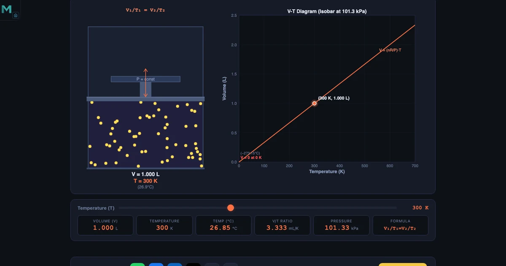
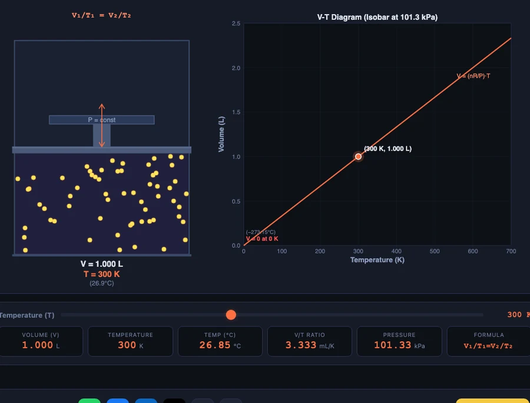

Charles’s Law Simulator — Volume, Temperature and the Kelvin Scale Explained

- Charles's Law states that at constant pressure the volume of a fixed amount of gas is directly proportional to its absolute temperature, written V₁/T₁ = V₂/T₂.
- Temperature must be in Kelvin, not Celsius: convert with T(K) = T(°C) + 273.15, because the proportionality only holds from absolute zero (0 K = −273.15°C).
- Example: a gas at 1.000 L and 300 K expands to 1.667 L at 500 K and contracts to 0.500 L at 150 K, since V/T stays constant at 3.333 mL/K.
Every semester, without fail, a handful of students get their first Charles’s Law problem wrong in the same way. They read “temperature doubles” and they double the Celsius value — 20°C becomes 40°C, and they expect the volume to double. It doesn’t. The actual absolute temperatures are 293 K and 313 K — only a 7% increase, not 100%. The formula gives the right answer; the student’s mental model of temperature doesn’t. That gap is the single most common source of Charles’s Law errors, and fixing it requires understanding what temperature actually means at the molecular level.
The free Charles’s Law Simulator on NHIT VisualLab is built around this exact problem. It animates gas particles moving at speeds that reflect their kinetic energy, shows the piston position responding in real time as you drag the temperature slider, and plots the V-T diagram as you go. By the time a student has explored a few temperature points, the connection between temperature, molecular speed, and volume is no longer abstract.
Why Students Get Charles’s Law Wrong Before They Even Start
The root cause is Celsius. We live in Celsius — weather forecasts use it, our thermostats use it, and most students’ intuition about “twice as hot” is built around it. But Celsius has an arbitrary zero: 0°C is the freezing point of water, nothing more. On the Celsius scale, a gas at −100°C has plenty of molecular motion. The temperature is not zero; only the number on the scale is convenient.
Charles’s Law states that volume is directly proportional to absolute temperature. Absolute means Kelvin. And Kelvin has a physically meaningful zero: 0 K is the point at which an ideal gas would have zero volume and (extrapolating from kinetic theory) zero molecular kinetic energy. The conversion is straightforward — \(T(\text{K}) = T(°\text{C}) + 273.15\) — but its implications run deeper than the arithmetic. Once you understand why Kelvin is necessary, the law becomes obvious rather than arbitrary.
The practical takeaway for solving problems: always convert to Kelvin before substituting into \(V_1/T_1 = V_2/T_2\). For example, 150°C converts to 423.15 K and −40°C converts to 233.15 K. Working in Celsius gives the wrong ratio every time.
What Charles’s Law Actually Says — V/T = Constant
Jacques Charles observed in the 1780s that gases expand uniformly as temperature rises when pressure is held constant. The modern statement: for a fixed amount of ideal gas at constant pressure, volume and absolute temperature are directly proportional.
The proportionality constant \(V/T\) stays fixed throughout any isobaric (constant-pressure) process. In the simulator, the reference state is T₁ = 300 K (26.85°C) and V₁ = 1.000 L at P = 101.325 kPa. That gives a V/T ratio of 1.000/300 = 0.003333 L/K, or equivalently 3.333 mL/K. Every additional kelvin of temperature adds 3.333 mL to the gas volume. Every kelvin removed subtracts the same.
At T₂ = 500 K: V₂ = 0.003333 × 500 = 1.667 L. At T₂ = 150 K: V₂ = 0.003333 × 150 = 0.500 L. These are the two states shown in the simulator screenshots above and below. The proportionality is exact, and you can verify both results instantly by dragging the temperature slider.
The scaling works for any reference state. Double \(T\) from 200 K to 400 K and volume doubles — from 4 L to 8 L. Triple \(T\) from 200 K to 600 K and volume triples — from 4 L to 12 L. The ratio \(V/T\) never changes while pressure and amount of gas stay fixed.
The V-T Diagram — Why It’s a Straight Line Through the Origin
A V-T diagram for a fixed amount of gas at constant pressure is a straight line. The slope of that line is \(V/T\) — the Charles’s Law constant. That much is straightforward. What surprises students is where the line points: extrapolated backward, it converges at \(V = 0\) when \(T = 0\nbsp;K\).
This is not a coincidence. On the Kelvin scale, volume is directly proportional to temperature, so the function is \(V = (V/T) \times T\) — a straight line through the origin. On a Celsius-axis graph, the same line would cross the volume = 0 axis at −273.15°C, which is the same physical point expressed differently. The Kelvin version is simply the honest one: the origin is where the physics lives.
In the simulator’s Simulate mode, the V-T diagram builds live as you move the temperature slider. Each temperature you visit adds a data point to the isobar. By the time you’ve swept from 100 K to 600 K, the linearity is undeniable. You’ve plotted Charles’s Law experimentally in about thirty seconds.
Absolute Zero — Discovered by Extrapolation, Not Experiment
Lord Kelvin arrived at absolute zero in 1848 not by cooling a gas to 0 K in a laboratory — that’s physically impossible — but by extrapolating the V-T line to zero volume. Every gas he examined, no matter its chemistry, produced a V-T line that extrapolated to the same temperature: −273.15°C. The consistency across gases made it clear that this temperature was physically special, not just a mathematical curiosity.
We now understand why from kinetic theory: temperature measures the average translational kinetic energy of gas molecules. When thermal energy reaches zero, molecular motion ceases and — for an ideal gas — volume vanishes. Real gases can’t get there because they liquefy first. Nitrogen, which makes up most of the air we breathe, liquefies at 77 K = −196.15°C, a full 196 degrees above absolute zero. Liquid nitrogen is the coldest substance most engineering students will ever handle directly, and it’s nowhere near the theoretical limit.
The Third Law of Thermodynamics goes further: it states that absolute zero is unreachable in a finite number of steps. You can approach it asymptotically, but you can never arrive. Every millikelvin lower requires more work than the one before.
Isobaric Processes — Work Done During Constant-Pressure Expansion

Charles’s Law describes an isobaric process: temperature changes while pressure stays constant. Constant pressure means the gas must do work against the surroundings as it expands — or the surroundings do work on the gas as it contracts. That work is:
At P = 101.325 kPa (standard atmospheric pressure), a gas expanding from V₁ = 1.0 L to V₂ = 2.0 L does:
\(W = 101{,}325 \times (0.002 - 0.001) = 101.325\text{ J}\)
That’s about the same energy as dropping a 10 kg weight from 1 m height. It’s not enormous, but it’s real work done by the gas pushing the piston outward. In a car engine cylinder, this isobaric expansion during combustion is how chemical energy becomes mechanical work. In a refrigeration cycle, the refrigerant does isobaric work when it vaporises inside the evaporator coil, absorbing heat from the surroundings and cooling your food in the process.
The average kinetic energy of gas molecules during this process is:
At T = 400 K: \(\overline{KE} = 1.5 \times 1.381\times10^{-23} \times 400 = 8.29\times10^{-21}\text{ J}\) per molecule. Barely anything for a single molecule — but multiply by Avogadro’s number and the collective kinetic energy of a mole of gas is substantial. The simulator visualises this by animating particle speeds proportional to \(\sqrt{T}\): at 400 K, particles move noticeably faster than at 200 K, reflecting the doubled kinetic energy per the \(\sqrt{2}\) increase in speed.
Charles’s Law and the Ideal Gas Law — the Connection
Charles’s Law is a special case of the ideal gas law. The full equation is:
where \(n\) is the number of moles and \(R = 8.314\text{ J/(mol·K)}\) is the universal gas constant. Hold \(P\) and \(n\) constant and you get \(V = nR/P \times T\) — volume proportional to temperature, which is exactly Charles’s Law. The proportionality constant \(V/T = nR/P\) tells you what the Charles’s constant depends on: amount of gas and pressure.
Verification with real numbers: 0.5 mol of an ideal gas at P = 101.325 kPa and T = 350 K:
\(V = \frac{0.5 \times 8.314 \times 350}{101{,}325} = \frac{1454.95}{101{,}325} = 14.36\text{ L}\)
This connection matters for problem-solving. When a question gives you \(P\), \(n\), and \(T\) rather than a before/after comparison, you need the full ideal gas law. When it gives you V₁, T₁, and asks for V₂ at T₂ with constant pressure, Charles’s Law is the faster route — no need to know \(n\) or \(R\) explicitly. Both approaches give identical answers for ideal gases.
Using the Simulator in Four Modes — Simulate, Explore, Practice, Quiz
Simulate mode is the interactive engine. Drag the temperature slider from 100 K to 600 K. The piston-cylinder animation responds immediately: particles speed up, the piston rises, the V-T diagram adds a point. The initial state is T₁ = 300 K, V₁ = 1.000 L — a clean reference that makes proportional reasoning easy. Set the slider to 600 K and watch the volume reach 2.000 L exactly; halve back to 150 K and it contracts to 0.500 L. The proportionality is visceral, not just numerical.
Explore mode offers 16 concept cards across four categories: Gas Laws Basics (pressure, temperature and kinetic energy, the Kelvin scale, the ideal gas law), Charles’s Law (the V/T definition, V-T diagram, isobaric processes, direct proportion), Absolute Zero (definition of 0 K, Lord Kelvin’s 1848 extrapolation, the Third Law of Thermodynamics, gas liquefaction), and Applications (hot air balloons, HVAC refrigerant behaviour, weather balloons, car tyre pressure on a hot day). Each card is a self-contained explanation with a worked example or key number. Start here if your students need conceptual scaffolding before the formula.
Practice mode generates randomised V₁/T₁ = V₂/T₂ problems with different initial conditions each time. Students enter their answer and get immediate feedback with a full worked solution. This is the mode most useful for exam preparation: varied numbers, no pattern memorisation, instant correction.
Quiz mode runs five multiple-choice questions per session. Questions cover the full range of the concept cards — definition recall, numerical calculation, real-world application, and conceptual reasoning. The randomised question pool means repeated attempts produce different question sets, so it works for revision across multiple sessions.
Try It Yourself
All tools below are free — no account, no download. Open them in a browser and start experimenting.
Key Takeaways
- Charles’s Law: \(V_1/T_1 = V_2/T_2\) at constant pressure. Always use Kelvin — never Celsius.
- The V/T constant for the simulator’s reference state (1.000 L at 300 K, 101.325 kPa) is 3.333 mL/K.
- At 500 K, volume expands to 1.667 L. At 150 K, it contracts to 0.500 L.
- The V-T diagram is a straight line through the origin on the Kelvin scale. Extrapolating to V = 0 gives absolute zero: 0 K = −273.15°C.
- Absolute zero was discovered by Lord Kelvin in 1848 through extrapolation, not by actually cooling a gas to 0 K — which is physically impossible by the Third Law.
- Isobaric work: W = PΔV. At 101.325 kPa, expanding from 1.0 L to 2.0 L does 101.325 J of work.
- Average molecular kinetic energy: \(\overline{KE} = \tfrac{3}{2}k_BT\). At 400 K this is 8.29 × 10²⁻²¹ J per molecule.
- Charles’s Law is PV = nRT with P and n fixed: V = (nR/P) × T.
Frequently Asked Questions
What is Charles’s Law in simple terms?
Charles’s Law states that for a fixed amount of gas held at constant pressure, the volume is directly proportional to the absolute temperature. If you heat a gas to twice its Kelvin temperature, its volume doubles. If you cool it to half its Kelvin temperature, its volume halves. Mathematically, V₁/T₁ = V₂/T₂ when pressure and amount of gas are unchanged. The key requirement is always to use Kelvin, not Celsius — the law only works with absolute temperature.
Why must I use Kelvin and not Celsius in Charles’s Law?
Charles’s Law describes a direct proportionality between volume and temperature. This only holds true on the absolute (Kelvin) scale, where 0 K represents the theoretical point of zero molecular motion and zero volume. On the Celsius scale, 0°C is just the freezing point of water — a convenient reference, not a physically meaningful zero. If you used Celsius, doubling the temperature from 20°C to 40°C would not double the volume, because the actual absolute temperatures are 293 K and 313 K — only a 7% increase.
What is absolute zero and how is it related to Charles’s Law?
Absolute zero (0 K = −273.15°C) is the lowest possible temperature, where an ideal gas would theoretically have zero volume. Lord Kelvin discovered this value in 1848 by extrapolating the linear V-T relationship from Charles’s Law to the point where volume equals zero. No real gas reaches absolute zero — gases liquefy and solidify before getting there — but the extrapolated value gives us the zero point of the Kelvin scale. The simulator lets you see this extrapolation by plotting the V-T diagram down to very low temperatures.
How does the Charles’s Law simulator show molecular kinetic energy?
In Simulate mode, the animated gas particles inside the piston-cylinder move at speeds proportional to the square root of temperature. At 500 K, particles zip around the cylinder and push the piston visibly outward. At 150 K, the same particles move much more slowly and the piston contracts inward. This animation connects the macroscopic behaviour (volume change) to the microscopic cause (molecular speed and kinetic energy), which is exactly the intuition students need before writing the formula.
What is an isobaric process and how does it relate to Charles’s Law?
An isobaric process occurs at constant pressure. Charles’s Law describes the relationship between volume and temperature during an isobaric process. When a gas is heated at constant pressure, it must expand to maintain that pressure — the piston moves outward. The work done by the gas during this expansion is W = PΔV = P(V₂ − V₁). For a gas at 101.325 kPa expanding from 1.0 L to 2.0 L, the work done is 101.325 J. This connection between gas laws and thermodynamic work is fundamental to understanding heat engines and refrigeration cycles.